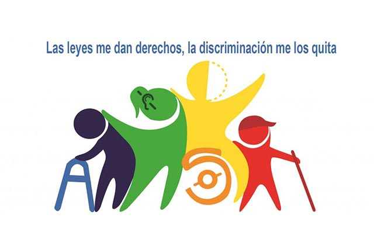

Tu discapasidad no justifica el abuso.
nadie tiene derecho a maltratarte
Señales de abuso: Control sobre tu movilidad o acceso a asistencia. Aislamiento de amigos o familiares. Amenazas o maltrato físico/psicológico.

Señales de abuso:
Control sobre tu movilidad o acceso a asistencia. Aislamiento de amigos o familiares. Amenazas o maltrato físico/psicológico.
Recuerda:
Tienes el derecho a tomar decisiones sobre tu vida. Busca apoyo: ya sea un amigo, un trabajador social o cualquier profesional que te pueda ayudar. Tu bienestar es lo más importante.
Recursos:Línea de ayuda para personas con discapacidad: 112
Grupo de apoyo discapacidad: Grupos de apoyo
Rompe el ciclo. Tienes el derecho a vivir libre de abuso